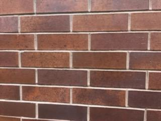
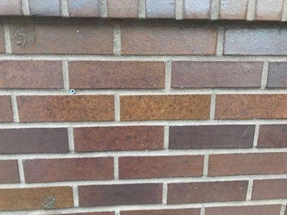

Cleaning Brick and Rock
Home Page
Cleaning brick and rock is a multistep process that requires the use of muriatic acid to clean debris such as algae off of the bricks. This is sometimes a process that is done multiple times to completely clean the brick or mortar surface.

